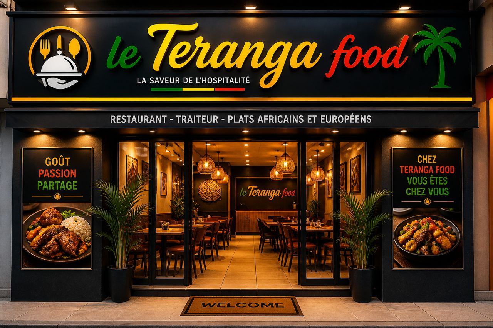

Le goût authentique du Sénégal
Découvrez une expérience culinaire conviviale au cœur de Dakar.

Bienvenue chez Teranga Food
Situé à Dakar, notre restaurant vous accueille dans un cadre chaleureux inspiré de la Teranga sénégalaise. Nous mettons en avant les saveurs du pays à travers des recettes traditionnelles et modernes.
Venez savourer nos plats dans une ambiance familiale et authentique.
En savoir plus